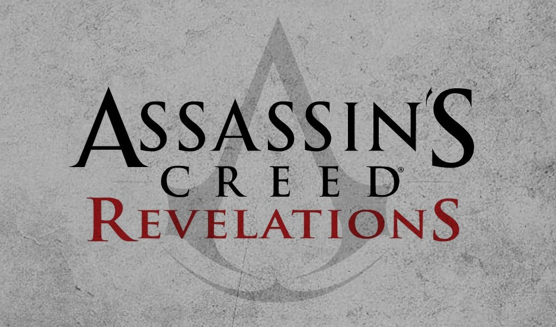

TITOLO: Assassin's Creed: Revelations
SVILUPPO: Ubisoft Sofia, Ubisoft Annecy
DATA DI USCITA: 15 novembre 2011 (PS3 e Xbox360), 17 marzo 2011(PC)
COLLOCAMENTO STORICO: Costantinopoli, impero ottomano
AMBIENTAZIONI: Costantinopoli
TRAMA:
Le vicende di Revelations hanno inizio poco dopo la fine dei fatti di Assassin's Creed: Brotherhood. Gli Assassini, sollevati per aver recuperato la Mela nascosta sotto il Colosseo, sono comunque sconvolti dall'inspiegabile uccisione di Lucy per mano di Desmond. Dopo averla pugnalata contro la propria volontà, mosso probabilmente dall'entità della Prima Civilizzazione nota come Minerva, il giovane crolla a terra svenuto.
Convinti che la sua attuale condizione dipenda dall'effetto osmosi, i compagni Assassini di Desmond lo inseriscono in un programma speciale dell'Animus per contrastare, o almeno rallentare, il deterioramento dei suoi processi cognitivi. Mentre viene trasportato da Shaun, Rebecca e William dall'Italia ad una località per il momento sconosciuta, Desmond si risveglia su una strana isola. Qui incontra il Soggetto 16, incarnato in un corpo virtuale, che rivela a Desmond che ora si trova nel programma di base dell'Animus: la sua mente, infatti, è stata frammentata dalle esperienze vissute nei panni di Ezio ed Altaïr, che hanno mescolato la sua personalità con quelle dei suoi due illustri antenati. Per salvarsi e tornare nel mondo reale, Desmond dovrà creare un "giunto sincronico", ovvero rivivere alcuni momenti chiave dei suoi antenati non ancora recuperati, in modo da "completare" le loro vite: in questo modo l'Animus sarà in grado di separare le esistenze di Ezio ed Altair da quella di Desmond, permettendo al ragazzo di risvegliarsi dal coma. Si scopre inoltre che il Soggetto 16, alias Clay Kaczmarek, ha vissuto un'analoga esperienza a quella di Desmond, ma a differenza di questi il suo corpo reale non è più in vita: pertanto Clay è rimasto prigioniero dell'Animus.
Desmond riprende così ad esplorare i ricordi di Ezio Auditore. Scopriamo che, nel corso degli anni, il Maestro Assassino non è riuscito a placare il suo animo dopo la pace seguita ai fatti di Brotherhood. Inquieto per le enigmatiche rivelazioni di cui è stato testimone, in particolar modo per esser stato il tramite involontario fra Minerva ed un misterioso uomo chiamato "Desmond", nel 1510 Ezio scopre una lettera scritta da suo padre che accenna ad una biblioteca nascosta a Masyaf (patria di Altair), e colma di una saggezza inestimabile: dopo dieci lunghi mesi di viaggio, il Mentore giunge finalmente all'antica cittadella. Ma al suo arrivo Masyaf, che non ospita più gli Assassini da secoli, si trova invece in mano dei Templari: anch'essi sono alla ricerca della biblioteca di Altair, la cui saggezza avrebbe dovuto condurli ad un misterioso "Grande Tempio". Ezio viene catturato dai Templari, ma riesce a liberarsi e ad uccidere il loro capo Leandros, sottraendogli il diario di Niccolò Polo. Dal diario Ezio apprende delle "cinque chiavi" necessarie per aprire la biblioteca, nascoste da Polo stesso a Costantinopoli quasi 300 anni prima.
Ezio si reca quindi a Costantinopoli, detta Istanbul dagli abitanti del luogo. Qui incontra Yusuf Tazim, Gran Maestro degli Assassini di Istanbul, il quale è alle prese con i Templari bizantini, che combattono per restituire il trono di Bisanzio, caduto nelle mani degli Ottomani, al legittimo erede dell'imperatore Costantino. A tutto ciò fa da sfondo la guerra per il trono ottomano fra il sultano Bayezid e suo figlio Selim, poiché il sultano ha designato come suo erede l'altro figlio, il principe Ahmet. Con l'aiuto della libraia veneziana Sofia Sartor, con cui instaura ben presto un legame, Ezio riesce a trovare quattro delle cinque chiavi di Masyaf (una era già stata trovata dai Templari sotto il Palazzo Topkapi), insieme a molti libri che si credevano perduti da secoli. Inoltre scopre che le chiavi, forgiate probabilmente con lo stesso materiale della Mela dell'Eden, contengono memorie della vita del leggendario Altair. In seguito l'Assassino, dopo aver salvato da un attentato dei Templari il giovane principe Solimano, figlio di Selim, stringe un'alleanza con quest'ultimo.
Ezio e Solimano sono erroneamente indotti a pensare che Tarik Barleti, capo dei Giannizzeri (le guardie personali del sultano), sia in combutta con i Templari, e che stiano tramando insieme di attaccare Bisanzio. Uccidendolo, però, scopre che in realtà Barleti stava tendendo un tranello ai Templari per sconfiggerli definitivamente, e grazie alle sue informazioni parte per la Cappadocia, dove Manuele Paleologo, l'ultimo erede di Costantino, sta radunando un esercito templare per riconquistare la corona bizantina. Giunto in Cappadocia, Ezio uccide Paleologo, che possedeva anche la quinta chiave di Masyaf. Ma dopo aver recuperato l'ultima chiave, scopre che dietro il complotto dei Templari non c'è altri che il principe Sehzade Ahmet, fratello di Selim e zio di Solimano, che gli propone uno scambio: le cinque chiavi di Masyaf per la vita di Sofia Sartor, che è stata catturata. Ezio accetta lo scambio, salva Sofia ed insegue Ahmet per recuperare le chiavi. Giunti ad una scogliera, Ezio, Sofia ed Ahmet incontrano Selim, che ha sconfitto in guerra il padre Bayezid: il nuovo sultano uccide Ahmet gettandolo da un dirupo e lascia vivere Ezio, in virtù della stima che il figlio Solimano nutre nei confronti del Maestro Assassino.
Una volta recuperate le cinque chiavi, Ezio e Sofia si incamminano insieme per Masyaf, e dopo aver aperto la biblioteca, scoprono che non v'è alcun libro: in realtà essa è una cripta contenente lo scheletro di Altair e la Mela dell'Eden. Nella mano di Altair, Ezio trova una sesta chiave che contiene l'ultimo ricordo del suo grande antenato, quello della sua morte, quando questi si chiuse dentro la cripta insieme alla Mela. Ezio trova anche il Frutto dell'Eden, ma decide di lasciarlo lì dove si trova, temendo del suo potere; il manufatto però prende vita. Ezio, parlando a Desmond attraverso i secoli, capisce ed accetta il suo destino di profeta: "Sono solo un tramite per un messaggio che elude la mia comprensione", afferma. Desmond, intanto, si trova al cospetto di Giove, terzo membro della triade della Prima Civilizzazione insieme a Minerva e Giunone. Questi racconta che la sua razza cercò di sfuggire senza successo alla catastrofe della tempesta solare, annunciata durante gli eventi di Assassin's Creed II. Prima della fine, la triade della Prima Civilizzazione sigillò tutto il proprio sapere in una cripta (probabilmente il "Grande Tempio" che cercavano i Templari), situato a Turin, nell'odierno stato di New York.
A questo punto Desmond, che ha completato i momenti chiave delle vite dei suoi due grandi antenati, si risveglia dal coma e dice: "So che cosa dobbiamo fare".
ARMI:
Lama Celata: L'arma più importante di un assassino è ovviamente presente già all'inizio del gioco. La seconda lama verrà aggiunta con il progredire della storia.
Lama Uncinata: Novità di questo capitolo, essa permetterà una maggiore libertà di movimento facilitando le scalate e gli spostamenti tra i tetti. Premetterà inoltre una nuova mossa di atterramento contro gli avversari.
Lama e Dardi Avvelenati: La Lama Avvelenata è la stessa vista nei precedenti capitoli, mentre i dardi, presenti dall'inizio dell'avventura, permettono ad Ezio di sparare proiettili avvelenati, senza correre il rischio di allarmare il bersaglio.
Pistola Celata: Quest'arma è presente fin dall'inizio e permette, come nei precedenti capitoli, di uccidere dalla distanza con un colpo rapido e preciso ma tuttavia molto rumoroso.
Spade e Martelli: Le armi classiche della serie. I modelli sono quasi tutti nuovi ma con il servizio Uplay è possibile sbloccare vecchie armi dei capitoli precedenti.
Spada Corta: L'arma più veloce ed agile del gioco. Essa è in grado di eliminare un alto numero di nemici in poco tempo. Sono presenti molti modelli acquistabili presso i fabbri.
Balestra: Introdotta nel precedente capitolo, essa permette di uccidere silenziosamente i bersagli dalla lunga distanza. Non è presente all'inizio del gioco e andrà acquistata successivamente da un fabbro.
Pugnali da Lancio:Ormai un classico della serie, essi permettono di eliminare silenziosamente i nemici anche tre per volta.
Spade Lunghe/Asce: Come nel capitolo precedente sono acquistabili dai fabbri. Per utilizzarle bisogna però acquistare il fodero pesante dal Sarto.
Bombe: Insieme alla lama uncinata è la novità principale di questo capitolo. Le bombe sono di tre tipologie: letali, tattiche e diversive. Le prime serviranno per uccidere i bersagli, le seconde per confondere i nemici e le terze per passare inosservato creando un diversivo. Dovranno essere costruite (ci sono centinaia di combinazioni) utilizzando i componenti che si potranno trovare in città, depredando i cadaveri o acquistandoli. Le bombe si compongono di tre parti: l'involucro, la polvere pirica (che determina il raggio dell'esplosione) e l'effetto (che varia a seconda della tipologia di bomba).
Mela dell'Eden: Il manufatto ritorna utilizzabile anche in Revelations, ma soltanto durante un ricordo di Altair. Come nel capitolo precedente fa impazzire i nemici fino ad ucciderli, ma a differenza di come la usava Ezio non diminuisce la sincronizzazione, perché Altair avendo studiato fino in fondo il manufatto ha anche scoperto come usarlo senza effetti collaterali.
Armi sbloccabili particolarmente potenti: oltre a queste armi, già disponibili nelle botteghe dei fabbri o, se si parla di bombe, Piri Reis o nei punti vendita in cui agisce il mercato nero, esistono delle armi sbloccabili dopo aver superato una serie di sfide, lanciate dalla Gilda dei Ladri, dei Mercenari, degli Athingani o degli Assassini. Per visualizzare queste sfide, basta giungere in un covo ed esaminare la lavagnetta nera che reca scritte bianche di gesso. Queste armi, proprio perché difficile ottenerle, sono molto potenti, come il Kijil turco di Yusuf (la spada più potente del gioco) e lo stiletto degli athingani. Anche le bombe comunque possono essere potenziate dopo aver vinto una serie di sfide, esibite sulla lavagnetta nera alla voce :"Bombe".